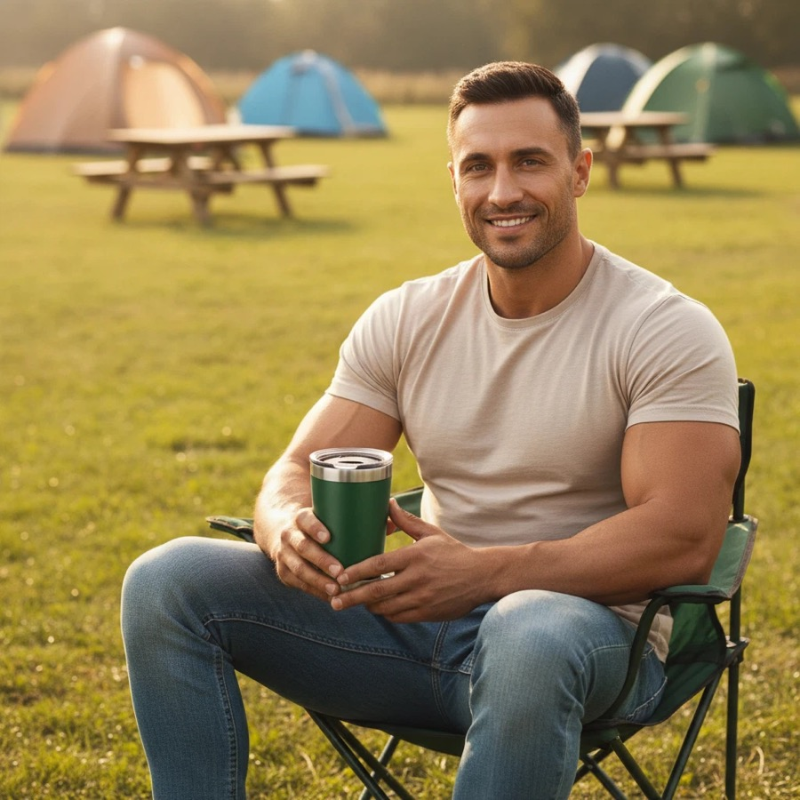
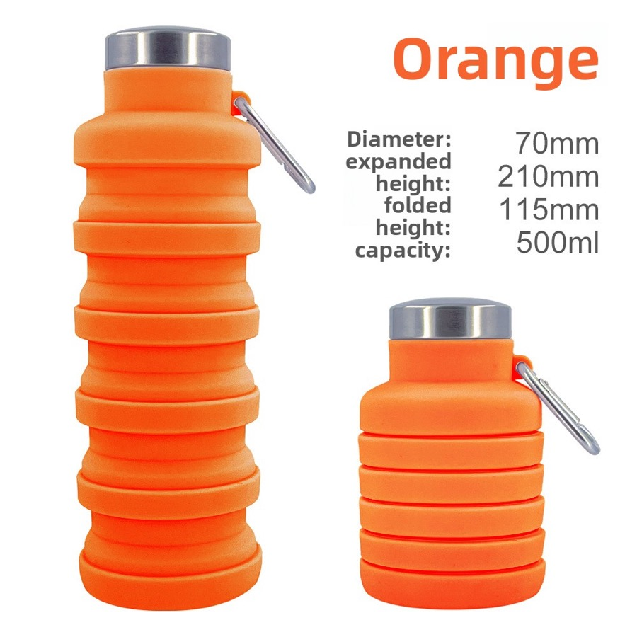

Low MOQ & Sample Support
We support small-batch custom logo orders starting from 200 pcs, offering physical pre-production samples to verify custom color coatings and logo engraving quality before bulk manufacturing.
Custom drinkware sourcing guide
HDS Drinkware (Huandingsheng) supports China custom drinkware sourcing, low-MOQ branding and OEM/ODM project coordination for promotional companies, agencies, event buyers and brand teams. This page explains product options, MOQ details, logo methods, packaging choices, sample timing and quote preparation for B2B buyers.



We support small-batch custom logo orders starting from 200 pcs, offering physical pre-production samples to verify custom color coatings and logo engraving quality before bulk manufacturing.
Every order undergoes strict 100% double-wall vacuum testing, handle tension testing, and paint adhesion tests. We handle global customs clearance, offering seamless DDP/DDU delivery to your warehouse.
promotional cups, tumblers, sports bottles and logo gift drinkware can be discussed by capacity, color, finish, lid, accessory, packaging and destination market. HDS helps buyers compare practical options instead of pushing a single retail-style SKU.
MOQ starts from 200 pcs for selected custom drinkware projects. The final MOQ depends on material, color, logo method, packaging, sample needs and current supply chain availability.
Material options include plastic, stainless steel, labels, silk screen and gift packaging options. Buyers can share their target market and price range so HDS can recommend a suitable material and product structure.
Logo customization support includes laser engraving, silk screen printing, UV printing, heat transfer, labels and packaging logo placement. The best method depends on product surface, artwork colors and buyer channel.
Stock samples can be arranged when available. Logo samples usually need artwork confirmation. Bulk production is commonly planned around 30-35 days after approval, with DDP/DDU, FOB or EXW shipping coordination discussed by project.
Product comparison
| Option | Best For | Customization Focus | Buyer Notes |
|---|---|---|---|
| Entry test order | New sellers and first projects | Stock color, simple logo, standard packing | Useful when the buyer needs to validate demand with lower inventory pressure. |
| Private label order | promotional companies, agencies, event buyers and brand teams | Logo, color, packaging, barcode and carton marks | Better for buyers who need a repeatable product line. |
| Gift packaging order | Gift companies and corporate buyers | Gift box, insert, card, tote bag and bundle planning | Presentation and sample approval should be confirmed early. |
| Wholesale repeat order | Distributors and wholesale buyers | Stable product, mixed colors, cartons and shipping plan | Best when reorder timing and carton data matter. |
| Method | Best Use | Strength | Notes |
|---|---|---|---|
| Laser engraving | Stainless steel and premium gifts | Durable, clean and professional | Good for corporate and private label positioning. |
| Silk screen printing | Simple logos and larger runs | Clear and cost-effective | Works best with simpler artwork. |
| UV printing | Color logos and detailed artwork | Better visual detail | Sample review is recommended before bulk order. |
| Label or packaging branding | Fast tests and gift sets | Flexible and practical | Useful when buyers want branding without complex setup. |
| Packaging | Best For | Support Details |
|---|---|---|
| Standard box | Samples and wholesale orders | Basic protection and practical carton packing. |
| Color box | Amazon, Shopify and retail channels | Can support barcode, brand information and product presentation. |
| Gift box | Corporate gifts and holiday programs | Can coordinate inserts, cards, sleeves and custom box print. |
| Custom bundle packaging | Gift companies and promotional buyers | Can combine drinkware, cards, tote bags, labels and carton marks. |
Custom Drinkware for Promotional Companies and Campaign Buyers is suitable for promotional companies, agencies, event buyers and brand teams. Amazon sellers may use low MOQ orders to test color demand and listing response. TikTok Shop sellers may focus on visual product styles and fast samples. Shopify brands often care about private label packaging and repeat order consistency. Gift companies and corporate buyers usually need logo approval, gift box planning and event timing. Distributors need stable product options, carton information and shipping coordination. HDS supports these buyers with sourcing, OEM/ODM customization, packaging coordination and sample support before bulk order.
Quote and sample checklist
Send these details together and the sales team can compare realistic product, logo, packaging and shipping options faster.
Yes. HDS can discuss food-contact material requirements, BPA-free options, FDA/LFGB-related documentation needs and packaging information by destination market before bulk production.
The MOQ starts from 200 pcs for selected custom drinkware projects, depending on product type, logo method, packaging requirements and current material availability.
Yes. Buyers can request stock samples or logo samples before bulk production. Sample timing depends on stock status, artwork, logo method and packaging complexity.
Common logo methods include laser engraving, silk screen printing, UV printing, heat transfer, labels, inserts and custom packaging branding.
Yes. HDS can coordinate DDP/DDU shipping options by project and destination market, while also supporting FOB or EXW discussions when needed.
This page is written for promotional companies, agencies, event buyers and brand teams who need custom drinkware sourcing, logo customization, packaging support and export coordination from China.
Yes. HDS can discuss OEM/ODM customization by product type, quantity, logo method, packaging requirements and production feasibility.
Custom 40oz tumbler manufacturer | Custom water bottles with logo | Low MOQ custom drinkware | Amazon seller drinkware sourcing | Drinkware logo method guide | Custom drinkware FAQ
Send your product photo, quantity, logo requirement, packaging request and destination country. HDS will help recommend suitable product options, logo methods, packaging solutions and shipping terms for your project.